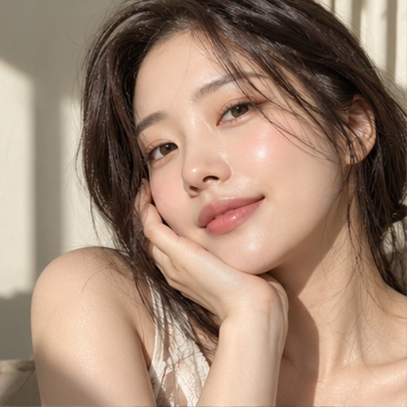
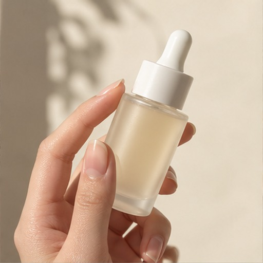
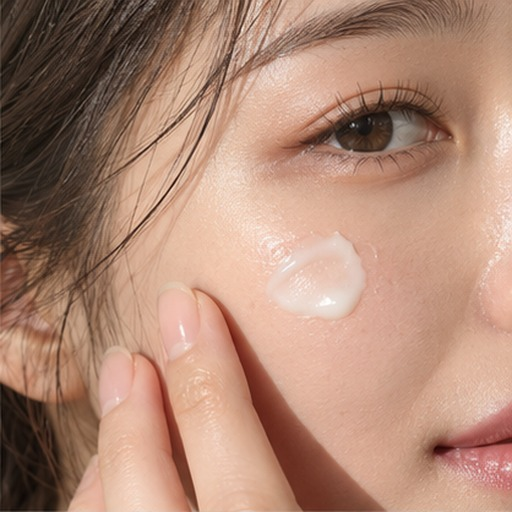

인플루언서 모집을
로블록스에서!
갈대 바다 옆 작은 섬.
매니저에게 첫 캠페인을 받고,
리크루터 폰으로 연결을 만들어보세요.
섬을 불러오고 있어요.
형상 미리보기 · 조명은 Roblox와 다름
드래그로 회전 · 스크롤로 확대
세 곳을 지나면,
첫 캠페인 완료.
준비 테라스 → 크리에이터 정원 → DM 데스크.
가까이에서 E 또는 화면을 터치해 작업을 시작해요.
폰에서 챕터를 누르면 바로 이동해 시작해요.
첫 캠페인
함께할 뷰티 크리에이터를
찾고 있어요.
스킨케어 광고 릴스 · 팔로워 1천~5만
캠페인 문구와 프로필 자료는 준비되어 있어요.



실제 설정은 안내서에서.
맵에서 ‘지금 하기’를 골랐다면 해당 안내를 따라 준비하고,
맵으로 돌아와 ‘설정했습니다 · 계속’을 눌러주세요.
완료할수록 커지는
나의 따봉.
끝낼 때마다 커집니다. 받침대는 그대로인데 손만 점점 거대해집니다. 일곱 챕터를 마치면 황금 따봉!
심화 과정에서는 벽면의 세 크리에이터 중 조건에 맞는 한 명을 30초 안에 골라요. 고료·소통 문의는 시간제한 없이 NPC의 답변 중 선택합니다. 세 도전을 모두 성공하면 왕따봉을 얻어요.
시작 전에는 천천히 조건을 읽고, 실패해도 그 자리에서 다시 도전할 수 있어요.
새 섬으로 들어가기
v6.12 파일을 Roblox Studio에서 열고 플레이하세요.